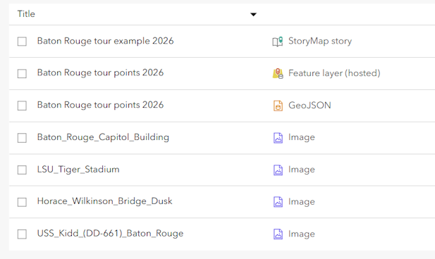
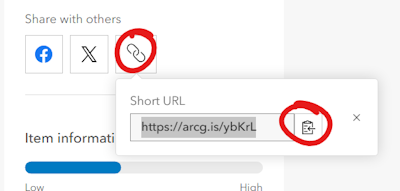

Assignment 3
Create your own geographic information and map it
Geographic information is the foundation of Web GIS. In this exercise, create your own dataset of geographic information following a standard data format (GeoJSON), make it available online as a web service, and display it on a web map.
Contents
Data
Your dataset will consist of point features, such as favorite restaurant locations. Decide on a topic and gather the following information about each of your locations:
- Name
- Description
- Photo URL
For example:
- Horace Wilkinson Bridge
- A cantilevered structure that carries I-10 over …
https://lsu-its.maps.arcgis.com/sharing/rest/content/items/f6fe4b0d285f431f9e4b650658f2e412/data
Those pieces of information will be added to your features as attribute data. We will use Geojson.io to draw your features on a map, add the attribute data, and save the layer as a GeoJSON file.
The end result will be a single GeoJSON file containing:
- Feature geometry (spatial data): coordinates of points
- Feature properties (non-spatial data): name, description, photo URL
For the photo URLs, you can host images in ArcGIS Online by clicking Content > New Item > Your device.
 How to add a photo to your ArcGIS Online content.
How to add a photo to your ArcGIS Online content.
To get the URL, see the picture’s Item Details page shown after uploading. Click Share and choose Everyone, then a public URL will appear that you can copy and paste into your GeoJSON file later.
 Share an item to get the public URL to the item.
Share an item to get the public URL to the item.
Steps
Once you have gathered the information above, proceed with the steps below to create the GeoJSON file, add it to ArcGIS Online, and make a web map.
Part 1: Prepare the GeoJSON
In this part you will draw your own features on a map and save the layer as a GeoJSON file.
- Go to geojson.io and pan and center the map on a place you chose for your dataset.
- In the drawing tools, click
Draw Point, then click a location the map corresponding to your first chosen point of interest. As you draw, the data will appear in the code pane to the right of the map in GeoJSON format.

- After drawing the first feature, edit the attributes by clicking the
Tabletab on the top menu.

- Create new columns:
- name
- description
- pic_url
- Type/paste the information you gathered into each attribute field.
- Save your work often in case the site crashes. Go to
Save>GeoJSONand the file will download to your computer. - Draw the rest of your point features, paste the attribute data, and save the final GeoJSON file.
That completes the creation of your spatial dataset.
Part 2: Create a web service
Next we will create a web service to make our data accessible to web applications. However, unlike the previous assignment on CodeSandbox, we will not do any coding to create the web service. Instead, we will use the web interface of ArcGIS Online to automatically set up a web service when we upload our GeoJSON file.
The type of item we’re creating is called a Feature layer (hosted) in ArcGIS Online.
- Sign into ArcGIS Online using the details provided by your instructor.
- In ArcGIS Online, go to your Content page to upload your GeoJSON file. Click
New item>Your deviceand browse the files on your computer for the.geojsonfile you saved in the previous section. - For
How would you like to add this GeoJSON?, choose the option tocreate a hosted feature layerand proceed toSave. This will create a web service. - You will be shown the Item Details page. Click the
Sharebutton and chooseEveryoneto make your layer public.
Your data is now stored in ArcGIS Online and the web service will provide the data to any applications that request it. Next, we will create an application to do just that.
Part 3: Create an app
Again, instead of coding an app like in the previous assignment, we will use tools in ArcGIS Online to set up an application that presents your data.
- From your ArcGIS Online Content page, click
Create app>ArcGIS StoryMaps. The StoryMap editor opens. - Under the cover info area, click
+and chooseImmersive>Map tour>Start with a feature layer, and choose the layer you created in the previous steps. - At the bottom of the editor page, click
Edit data source>Media>Image URL fieldand selectpic_urlas the field. - Feel free to change other settings or add more content to your app.
- Once finished, click
Publishand set the sharing option toEveryone.
Part 4: Metadata
- Go to your Content page to see that you have new three new items from this assignment, along with any images you uploaded: a
StoryMap story,Feature layer (hosted), andGeoJSON.  -
Click on the item for your
StoryMap storyto see its Item Details page. The URL of the Item Details page is what you will submit for the assignment.
 Example of an Item Details page in ArcGIS Online.
Example of an Item Details page in ArcGIS Online. - The green progress bar on the right side of the page indicates how many of the metadata fields you have completed. Complete these fields:
- Summary - a short sentence saying what your app shows and does
- Description - a more detailed explanation of the purpose of your app and the content of your layers
- Thumbnail - if you are not satisfied with the default thumbnail, you can upload a screenshot or other graphic
- Terms of Use - typically “None” in our case or a Creative Commons license such as CC BY-SA
- Credits (Attribution) - similarly, give credit for any images or layers used in your map
From this page you can click View story to launch the app, or click Edit story to make further changes to the app.
Submit
- Use the short URL button on the Item Details page of your story map to copy the URL that you will submit for the assignment. It is a link to the Item Details page, not to the story map app. It should look something like
https://arcg.is/123ABC.
 - Open an incognito/private browser window and paste your Item Details page URL. Click
View story. - If you can view your app and Item Details page in the incognito window, then you are ready to submit the short URL.
↑ Top
← Back to Assignments